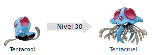

Tentacruel (ドククラゲ Dokukurage en japonés) es un Pokémon de tipo agua/veneno introducido en la primera generación. Es la evolución de Tentacool.

Evoluciones de Tentacruel
Su nombre proviene de la combinación de las palabras inglesas tentacle (tentáculos) y cruel (cruel).
Su nombre japonés, Dokukurage, proviene de las palabras 毒 Doku (Veneno) y, al igual que su preevolución (Tentacool/Menokurage), 水母 Kurage (Medusa), dando lugar así lógicamente a Medusa Venenosa.
Es también conocido como el gangster del mar. Tiene cerca de unos ochenta tentáculos que puede alargar o acortar a su voluntad, los usa para atrapar a su presa y debilitarla mediante una sustancia muy tóxica que segrega por sus picos, una vez atrapada su presa, no la suelta pase lo que pase, se le ha visto usar sus tentáculos de diferentes maneras, ya sea a modo de "brazos" para alcanzar a sus presas con, esta técnica puede llegar a alcanzar hasta 80 presas a la vez, es decir una por cada tentáculo que tiene, otra manera es entretejerlos como una red para impedir que sus presas escapen. Es de un cuerpo gelatinoso en la parte de la cabeza, solo sus picos venenosos están hechos de un material sólido.
Usa el brillo de las esferas rojas de la cabeza para comunicarse con los suyos cuando está nervioso y avisarles del peligro, se ha descubierto que un parpadeo es una señal de advertencia. También se la ha visto usar sus esferas rojas que tiene a ambos lados de su cabeza para el ataque, las cuales brillan con gran intensidad antes de lanzar una descarga ultrasónica a lo que le rodea, este estallido crea unas olas tremendas a su alrededor. En algunas ocasiones aparecen grandes bancos de este Pokémon, durante este suceso, los Pokémon pez de alrededor desaparecen sin dejar rastro alguno.
Aunque según su especie Pokémon es una medusa, comparte más rasgos con una pota o potón del Pacífico, como su pico o los destellos que emite.
Página creada por Luis Felipe Restrepo y Daniel Felipe Gutierrez
Información extraida de: Tentacruel. (s. f.). WikiDex. Recuperado 5 de noviembre de 2022, de https://www.wikidex.net/wiki/Tentacruel